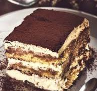

Home
Tiramisù

Description
Il dolce italiano al cucchiaio più amato: strati di savoiardi imbevuti nel caffè e crema al mascarpone.
Ingredients
- Savoiardi
- Mascarpone
- Caffè
- Uova
- Zucchero
- Cacao amaro
Steps
- Prepara il caffè e lascia raffreddare.
- Monta i tuorli con lo zucchero, poi aggiungi il mascarpone.
- Inzuppa i savoiardi nel caffè e fai gli strati.
- Copri con cacao e lascia riposare in frigo.